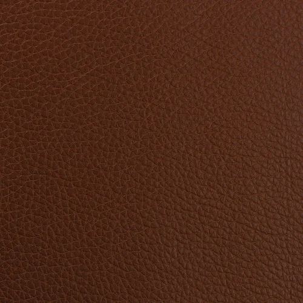

About Microfiber Leather
Microfiber leather is a synthetic material composed of ultra-fine polyester fibers and polyurethane resin. It delivers a luxurious, smooth surface with superior resistance to wear and tear, making it a high-performance alternative to natural leather.
Key Features
- Ultra Lightweight: Ideal for fashion, footwear, and sports equipment.
- High Strength: Outstanding tensile and tear strength, even when thin.
- Soft & Smooth: Offers a luxurious hand-feel with elegant finish.
- Water-Resistant: Excellent resistance to moisture and humidity.
- Eco-Friendly Options: Available with solvent-free and low-VOC processing.
Applications
- Luxury handbags and wallets
- Sports shoes and sneakers
- Car interiors and steering covers
- Furniture upholstery
- Tech accessories (laptop sleeves, covers)
Why Choose JontyMart Microfiber?
- Advanced material with premium finish
- Consistent quality from certified manufacturers
- Wide selection of grains, textures, and colors
- Global shipping and custom supply support
- Trusted source for Australian B2B buyers
Care Instructions
Clean gently using a microfiber cloth with mild soap and water. Avoid strong solvents. Store in a dry, shaded environment for maximum lifespan.